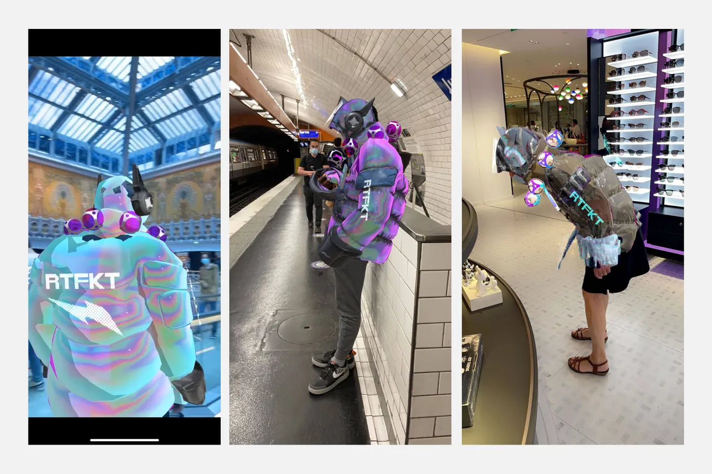

AR clothing try-on generally refers to the ability for three-dimensional digital clothing to automatically appear on a person as they move in real time, usually either via their phones but also via laptop or other devices. Unlike a static image that is retroactively fitted in a digital garment, it behaves the same way as Snapchat face filters: when your body moves, the item reacts in sync, responding to the wearer’s movements, measurements and environment in a way that appears to be realistic.
AR is also widely used in arts. Much of the earliest AR art focused on superimposing virtual objects and information onto real environments as a new form of provocative public art. Several early practitioners described AR art (or at least its potential) in terms of the theorists of the 1960s French Situationists and their notions of “psychogeography”—the invisible (yet “real”) personal emotions, cultural memories, power structures, and political conflicts layered onto the urban landscape. The technique of détournement, a hijacking and redirection of intended meaning, could reveal or transform these associations and challenge traditional hierarchies. Whereas in the time of the Situationists (and earlier, the Lettrists), this might have involved graffiti, posters, or subversive street pranks, in the late 1990s and early 2000s, pioneers of AR art sought to achieve these critical effects through the embedding of provocative digital experiences in everyday spaces.
Acute Art is a striking example. Perhaps the most ambitious such start-up in its aims, it is viewed with profound skepticism by media art insiders, who tend to be wary of well-funded newcomers to this territory. Acute Art was founded in 2017 by the Swedish art collector Gerard De Geer and his son Jacob, but took on new prominence when Daniel Birnbaum joined as director in 2019. A respected curator and critic who spent nearly a decade as rector of Frankfurt’s Städelschule fine art academy and served as artistic director of the 2009 Venice Biennale, Birnbaum left his most recent position as director of Stockholm’s Moderna Museet to take up this role at Acute Art’s London headquarters. While some artist projects for Acute were already under way, Birnbaum brought a number of new high-profile names to the platform to create new works in VR and AR. Even before the pandemic, the organization had decided to focus on its AR app, in order to reach users who were unable to attend museum shows or who had no VR headset at home; after March, this move seemed prescient.
The Mill Experiential & Interactive team is bringing iconic artworks in The Tate Britain to life this summer through Augmented Reality. ‘Untold Stories’ is a project that explores the hidden narrative of existing paintings and the artists behind them. Specifically, the untold stories that bear relevance to the contemporary audience, sociopolitical and cultural challenges that the artist and subject faced at the time.